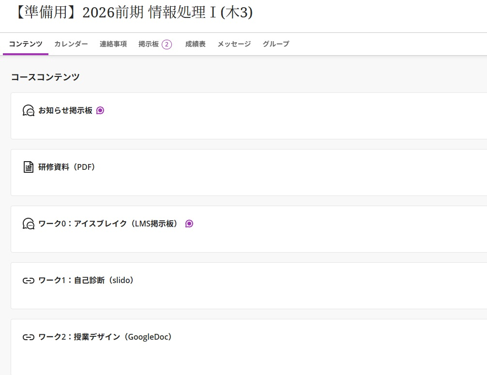

Blackboard Ultraは、従来の「Original」コースに比べて、画面デザインと操作性を大きく見直した新しいインターフェースです。 コースの構造をシンプルにし、学生が学習の流れを追いやすくなるように設計されています。
 Blackboard Ultraのコース画面イメージ。左側の複雑なメニューをなくし、1ページに学習コンテンツをまとめるデザインが特徴です。| 項目 | Blackboard Original | Blackboard Ultra |
|---|---|---|
| 画面構成 | 左側メニューでコンテンツを階層的に切り替える構成。 | 1つのメインページにフォルダやモジュールを並べるシンプルな構成。 |
| コンテンツの単位 | 「アイテム」や「コンテンツエリア」など複数の種類があり構造が複雑になりやすい。 | 「ドキュメント」を中心に、テキスト・ファイル・メディアを1ページにまとめて配置できる。 |
| 学習の流れ | 資料置き場として使われることが多く、学習の順番が分かりにくいことがある。 | モジュールや進捗トラッキング機能により、学習の順番と到達度を確認しやすい。 |
| デザインとアクセシビリティ | テーマの自由度が高い反面、画面がバラバラになりやすい。 | 統一されたインターフェースにより、デバイスを問わず見やすさと操作性を重視。 |